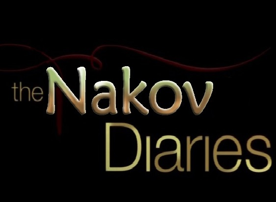

76512
32
Сигурно вече знаете за истинската същност на Наков, ако не, предлагаме ви
да разгледате секцията ПРЕПОДАВАТЕЛИ и ИСТОРИЯ. Най-новите сведения за нашият герой са, че всъщност той е бил главният
учител на Чък Норис. Чък Норис е научил всичко, което знае и може от Наков, но неговата грешка е била, че не е бил заинтересован
от програмирането и именно поради тази причина се карат помежду си и Чък Норис не може да спи от страх, че Наков може да му хакне и спре
интернета.
663112
19
Програмист създаде робот-жена, който да отговаря на всички негови
изисквания и предпочитания. Роботът е много умен. Притежава изкуствен интелект и се обновява с нови знания
сам. За отрицателно време е научил всички магазини за дрехи, чанти и обувки. Почнал да слага огромно количество
фондютен и да правни странни, наподобяващи човка, форми с уста. Програмистът се е опитвал многократно да дебъгне
софтуерът на робота, но без успех. Странните неща, на които се самообучавал били с необратим характер.
Той се е усъмнил, че това е дело на злонамерен външен софтуер и е опитал да създаде анти-вирус, но без успех.
В момента програмистът е разорен, притежател е на актив от 126 дамски чанти 50 чивта обувки във всеки един нюанс от сивото.
Близо тон фондютен и 2 микробуса с всякакъв грим и никакви пари в брой или по сметка.
123112
12

Открит е един от дневниците на НАКОВ, където се
разкрива планът "НАКОВ", който цели обучаването на армия от програмисти и завладяването на
света, чрез създаването на софтуер, който да управлява всичко. Светът е в шок след това разкритие.
Планът е влязъл в действие и нищо не може да го спре... Всичко е оставено в ръцете на съдбата.
За всички, които не са част от плана, остава да се надяват, армията от програмисти да бъдат милостиви.